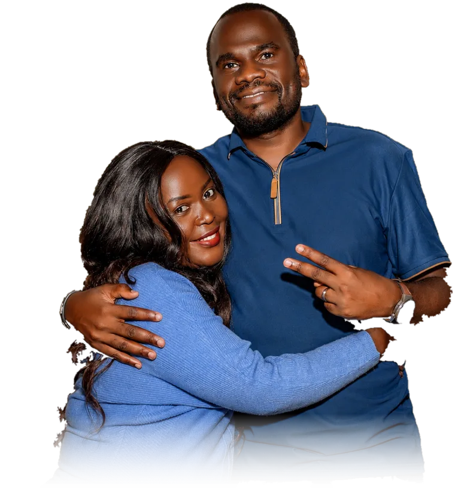

Become
everything God
created you to be
Ginomai Global Ministries is a Christ-centred family where ordinary people are transformed into who God designed them to be — in faith, in purpose, and in community. Wherever you are on the journey, there is a place for you here.
A church built on becoming
Our name comes from the Greek word ginomai — “to come into being, to become.” It is the story of every person who walks through our doors: God is not finished with you, and neither is your story.
We are a global family of believers passionate about worship, rooted in the Word, and committed to raising disciples who transform their homes, cities, and nations.
But as many as received Him, to them gave He power to become the sons of God.John 1:12 — the “Ginomai” verse

Your first visit, made simple
No dress code, no pressure, no perfect people — just a warm family, powerful worship, and a word that meets you where you are. Here is what to expect.
You arrive, we welcome you
Our host team meets you at the door, helps you find a seat, and gets your kids happily checked in to Ginomai Kids.
We worship together
Vibrant, Spirit-filled worship and practical, Bible-based teaching — Sunday service runs 11:00 AM – 1:00 PM.
You find your people
Stay for a coffee at the connect corner, meet a pastor, and discover the next step on your becoming journey.
Our gatherings
A place for every person to become
From the youngest child to the whole city — every ministry exists to help someone take their next step with Jesus.
Ginomai Kids
Safe, fun, Bible-rich environments where children discover who God made them to be.
Learn moreYouth & Young Adults
A generation on fire — worship nights, mentorship, and real community for ages 13–30.
Learn moreWorship & Creative
Musicians, singers, media and production teams leading the house into God’s presence.
Learn moreLife Groups
Small communities meeting in homes across the city — where church becomes family.
Learn moreMissions & Outreach
Taking the gospel beyond our walls — feeding programs, school outreaches, and global missions.
Learn morePrayer & Intercession
The engine room of the house — daily prayer altars and monthly nights of encounter.
Learn moreMiss a Sunday? Never miss a word.
Catch up with sermons and devotions any time on Ginomai Radio — or join us live every Sunday from anywhere in the world.
Our radio programmes
Download the Zeno app and search Ginomai Radio, or tap any programme below.
Listen now on Ginomai Radio- Saturday
- 12:00 – 1:00 PM Words of Grace Br. Benson Okwanga
- 2:00 – 3:00 PM Deep Councils Br. Steve Ijala
- 3:00 – 4:00 PM Bible Truth Ap. Kenneth Bamuleeta
- 4:00 – 5:00 PM Love Each Other Sis. Moreen Wizera & Sis. Sharon Nalwanga
- Sunday
- 11:00 AM – 1:00 PM Sunday Service Ap. Kenneth Bamuleeta
- 3:00 – 4:00 PM The Patrol Br. Timothy Arinanye
- 4:00 – 6:00 PM Benchmark Sis. Morren Nagasha
Listen now on Ginomai Radio — thank you for listening to the heavenly atmosphere.
Mark your calendar
Night of Worship — Becoming
An evening of extended worship, prayer, and encounter. Doors open 6:00 PM.
New Here? Welcome Lunch
Meet the pastors, hear the vision, and find your place in the family — right after third service.
City Serve — Community Outreach
Join hundreds of volunteers serving schools, hospitals, and homes across the city.
Giving that helps people become
Every gift plants the gospel deeper — in our city and beyond. Your generosity fuels ministries, missions, outreaches, and the next person's story of becoming.
This Sunday, come as you are
Tell us you’re coming and we’ll roll out the welcome — a reserved seat, kids check-in ready, and a friendly face waiting for you.
- Service Times
- Sundays · 11:00 AM – 1:00 PM1st Friday prayers · 2nd Friday praise & worship · 3rd Saturday street evangelism
- Location
- Ginomai Worship CentreKampala, Uganda — update with your street address
- Contact
- ginomaiglobalministries5341@gmail.comEmail us and our team will get back to you.
- Follow Ginomai
- YouTube · Facebook · Instagram · TikTok · X — Sundays live from 11:00 AM